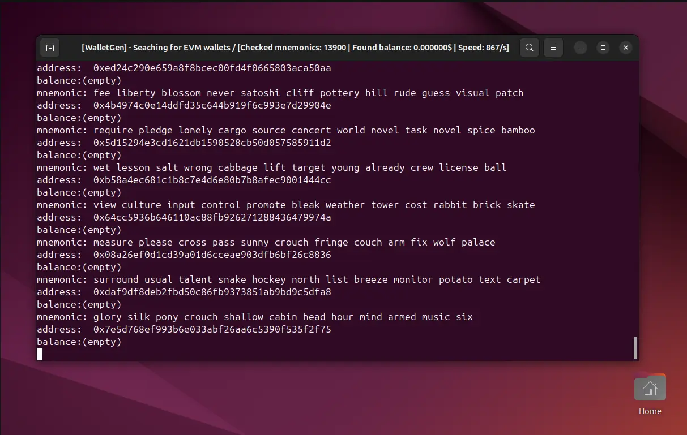
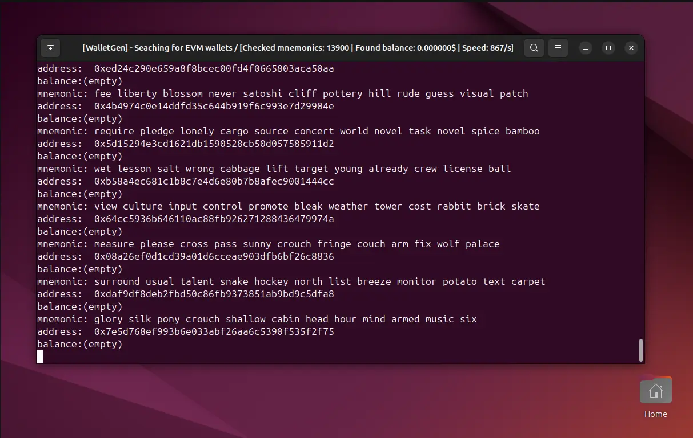
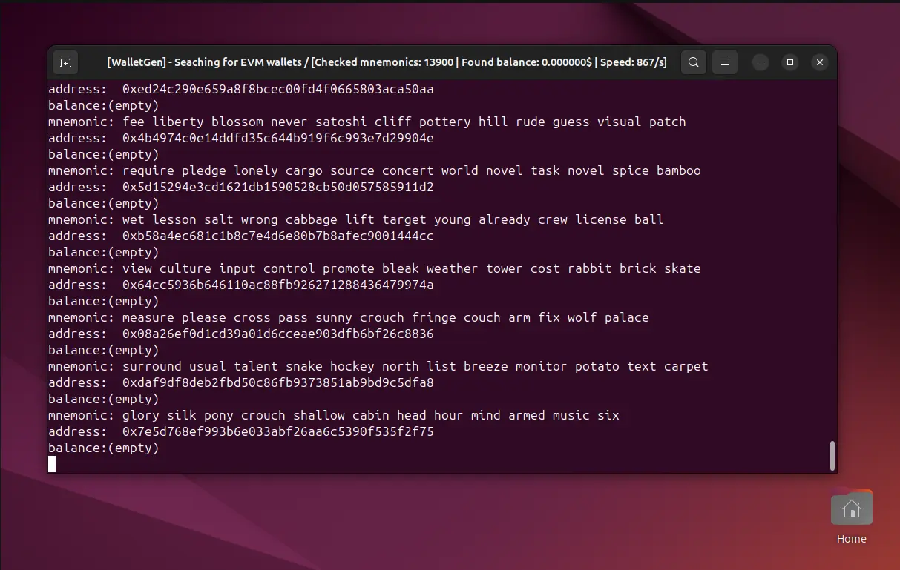
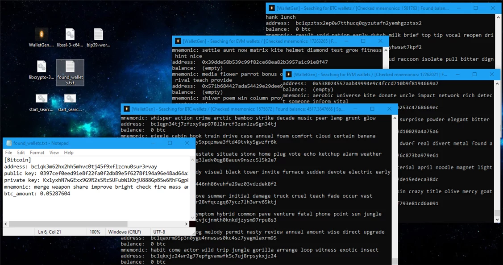

Demo
Watch WalletGen in action:
 

WalletGen is a fast, open-source wallet generator and brute-force recovery tool for lost Bitcoin, Ethereum, and EVM-compatible wallets. Built in C++ for maximum performance.
WalletGen generates wallets using industry standards like BIP39, BIP44, Bech32 for Bitcoin, and Keccak256 hashing for Ethereum and other EVM chains. It then compares generated addresses against:
Thanks to C++ and multi-threading, it's 10x faster than most Python alternatives.
WalletGen supports the following chains:
Watch WalletGen in action:

WalletGen.exewget https://github.com/tony-dev1/walletgen/releases/download/walletgen/walletgen-v1.5.0-linux.tar.gz
tar -xzf walletgen-v1.5.0-linux.tar.gz
cd walletgen
./walletgenBoost your scanning speed by using pre-built address databases:
| Type | Download | Size | Addresses |
|---|---|---|---|
| BTC Database | Download | 1.03 GB | 23,428,179 |
| EVM Database | Download | 1.02 GB | 25,999,700 |
I’ve personally recovered two BTC wallets with a balance. The first had 0.000032 BTC, the second contained 0.0528 BTC (roughly $4800 at the time of discovery).
bc1qk3m62hx2hh5mhvc0tj45f9xflzcnu0sur3rvay After a week of searching, I found a wallet with 0.25 BTC (~$19k):
bc1q29c5m3w4jxtsj4vcd2ccw4t68xm8m7vs5vytu0If WalletGen helped you recover a wallet, consider sending a small donation to support development: